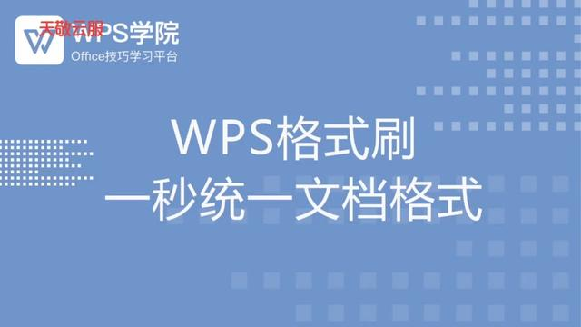
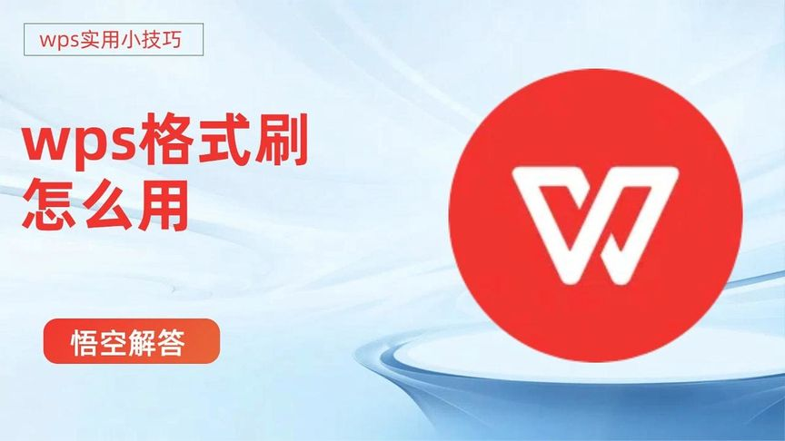
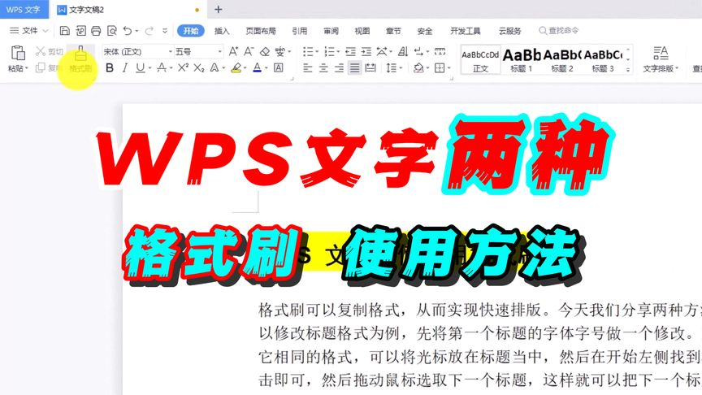
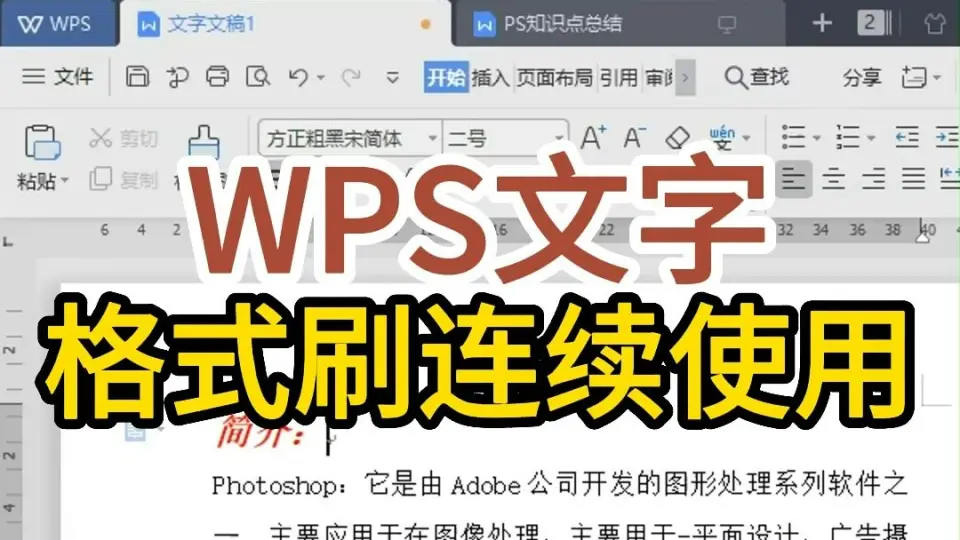

WPS如何使用格式刷？
2025年3月6日
在WPS中使用格式刷，首先选中已设置好格式的单元格或文本，点击“开始”菜单中的“格式刷”按钮。然后，拖动或点击目标单元格或文本，即可将原格式应用到新的内容上。如果需要多次应用格式，可以双击“格式刷”按钮，然后连续选择多个目标区域，完成格式复制。

格式刷的基本操作方法
如何复制单元格格式
- 选中源单元格：首先，在WPS表格中选中你想要复制格式的单元格。确保选中单元格已经应用了你想要复制的格式，如字体、颜色、边框等。
- 点击格式刷：在“开始”菜单中，点击“格式刷”按钮。这时鼠标指针会变成一个刷子形状，表示格式刷已激活。
- 应用格式到目标单元格：接下来，单击或拖动鼠标到目标单元格或区域，格式就会被复制到这些地方。目标单元格会自动应用源单元格的格式设置。
格式刷如何快速应用到多个区域
- 双击格式刷：如果你需要将相同的格式应用到多个区域，可以双击“格式刷”按钮。这会保持格式刷处于激活状态，直到你手动取消。
- 选择多个目标区域：在双击激活格式刷后，直接点击或拖动鼠标到多个目标单元格区域，格式会一一应用到选中的区域。你可以应用于不连续的多个区域。
- 避免格式覆盖原数据：使用格式刷时，如果目标单元格已有数据，格式刷会覆盖其格式，但不会影响单元格的原始数据。这使得格式刷非常适合批量调整单元格样式。
格式刷与复制粘贴的区别
格式刷与复制粘贴的功能对比
- 格式刷复制格式，复制粘贴复制内容：格式刷仅复制源单元格的格式（如字体、颜色、边框等），而不包括内容。而复制粘贴则不仅复制格式，还包括单元格中的所有数据和公式。
- 操作简便性：格式刷操作简洁，只需点击一次即可复制格式，而复制粘贴则需要多个步骤，包括选择内容、复制、定位目标区域、粘贴等。
- 适用场景不同：格式刷更适用于快速复制格式，特别是当多个单元格需要统一样式时；而复制粘贴则适用于复制包含数据和公式的完整内容。
为什么格式刷更适合格式化工作
- 专注于格式：格式刷的最大优势在于它只复制格式，避免了不必要的数据复制。对于那些需要统一格式的工作，如报表中的统一字体或颜色设置，格式刷比复制粘贴更精确高效。
- 避免数据冲突：在使用复制粘贴时，可能会不小心将数据或公式也复制过来，导致目标区域内容出现混乱。而格式刷只复制格式，不会干扰原有数据，确保工作表中的数据完整性。
- 提高效率：格式刷能够快速将一个单元格的格式应用到多个目标区域，尤其是在需要统一样式的情况下，避免了反复设置每个单元格的麻烦。对于大范围的格式调整，格式刷显得更高效。

格式刷的使用场景
在WPS表格中使用格式刷
- 统一表格格式：在WPS表格中，当你需要将某一单元格的格式应用到多个单元格时，格式刷可以帮助你快速复制格式。比如，若你要统一整列或多列的字体、颜色、边框等，使用格式刷可以大幅提高效率。
- 格式化标题和数据：格式刷非常适合在表格中快速设置标题行或特殊数据的格式。例如，将表头的字体加粗、颜色填充和边框设置复制到其他表头上，保持表格的统一性和美观性。
- 跨多个工作表应用格式：如果你有多个工作表需要统一格式，格式刷同样非常有用。你可以在一个工作表中设置格式，然后通过格式刷复制到其他工作表，确保所有工作表的格式一致。
在文档中应用格式刷提高效率
- 快速应用文本样式：在WPS文档中，格式刷可以帮助你快速应用字体、大小、颜色等文本格式。当你有大量需要统一格式的文本时，格式刷可以节省大量的手动调整时间。
- 提高报告和总结的专业性：使用格式刷可以轻松将标题、正文、表格、引用等不同部分的格式统一，确保文档的一致性和专业性。例如，报告中所有章节标题应用相同的字体和字号，正文保持一致的行距和段落格式。
- 批量修改文档格式：如果文档中有多处格式需要调整（如更改字体、段落间距等），格式刷让你可以一次性复制格式并应用到不同位置，避免逐个修改。通过这种方式，文档格式修改变得更加高效。

格式刷与格式样式的配合使用
如何将格式刷与单元格样式结合使用
- 应用内置单元格样式：WPS提供了多种内置单元格样式，如标题、数据、货币、日期等。你可以先应用这些预设样式，再用格式刷复制样式设置到其他单元格。这样可以确保一致性，同时保留了样式的自动适配功能。
- 自定义单元格样式：如果内置样式不满足需求，可以自定义样式，调整字体、边框、填充色等。创建完自定义样式后，通过格式刷将其快速应用到多个单元格或区域，极大提高格式化的效率。
- 结合格式刷和样式修改：格式刷不仅可以复制单元格样式，还能快速调整某些特定格式。例如，若某个区域的数字格式或对齐方式不适用，你可以先应用样式，再用格式刷精确调整其他细节，如边框或颜色，以达到完美的效果。
利用格式刷提升WPS文档的统一性
- 统一表格格式：通过格式刷，可以迅速将一个单元格的格式应用到整个表格，确保字体、行高、列宽、边框等设置一致。特别是对于复杂的报表，格式刷能够节省时间，避免重复设置。
- 标准化文档排版：在文档中，格式刷能够帮助统一章节标题、正文、列表等的格式，确保文档各部分之间的统一性。这不仅提升文档的专业感，还能让读者更容易浏览和理解。
- 跨文件应用格式：在多个WPS文档之间，格式刷也能帮助用户保持一致的样式。例如，若需要制作多个报告或汇总，格式刷能够将样式统一应用到每个文档，提升文档之间的连贯性和视觉效果。

格式刷快捷键和使用技巧
如何通过快捷键使用格式刷
- 格式刷的快捷键：在WPS中，可以使用快捷键
Ctrl + Shift + C来复制格式，Ctrl + Shift + V来粘贴格式。使用这两个快捷键，用户无需点击格式刷按钮即可快速复制并应用格式，极大提高了工作效率。 - 快捷键的优势：通过快捷键，你可以避免频繁点击工具栏上的格式刷按钮，从而减少鼠标操作时间，特别是在处理大量数据或文本时，快捷键能显著提升速度和效率。
- 适用于各种格式：无论是文本格式、表格格式、字体大小、颜色还是边框样式，快捷键都可以灵活复制并快速应用到目标区域，保证格式一致性并提高工作效率。
格式刷的高级应用技巧
- 批量格式化多个区域：如果你需要将格式应用到多个非连续区域，双击格式刷按钮并选择目标区域，格式刷将持续激活，直到你手动取消。这是处理多个区域时的一个高级技巧，使得格式化工作更为高效。
- 复制不同类型的格式：格式刷不仅仅是复制字体或颜色，还可以复制单元格的对齐方式、数字格式、边框等。如果需要跨多个单元格统一设置格式，可以使用格式刷结合不同格式元素，进行全面格式调整。
- 与单元格样式结合使用：在使用格式刷时，可以结合WPS内置的单元格样式。例如，首先选择合适的样式应用到某些区域，再用格式刷将样式扩展到其他地方，这种方法能节省大量时间，并且能确保整个表格格式一致性。
格式刷可以复制哪些格式？
格式刷可以复制单元格的各种格式，包括字体、字号、颜色、边框、单元格填充颜色、对齐方式、数字格式等。它只会复制格式，不会复制单元格中的数据或公式。
格式刷如何在多个单元格中应用？
在WPS中，使用格式刷时，双击格式刷按钮可以将它保持在激活状态，允许你将格式应用到多个不连续的单元格或区域。每次点击目标单元格后，格式会被自动应用。
格式刷能否跨工作表使用？
格式刷可以跨工作表使用，只需在一个工作表中选择格式并激活格式刷，然后切换到另一个工作表，点击目标单元格或区域，即可应用相同的格式。
上一篇：
怎么修改WPS的语言？
最新文章
如果WPS未保存文档并意外关闭，可以通过“自动恢复”功能尝试找回数据。打开WPS…
在WPS中打印Excel文件，首先打开文件并点击左上角的“文件”按钮，选择“打印…
在WPS中使用格式刷，首先选中已设置好格式的单元格或文本，点击“开始”菜单中的“…
打开WPS Office，点击左上角“WPS文字”或“WPS表格”菜单。选择“选…
WPS PDF的目录功能位于左侧面板。在打开PDF文件后，点击界面左侧的“目录”…
要删除WPS网盘图标，首先右键点击桌面上的WPS网盘图标，选择“删除”或“卸载”…